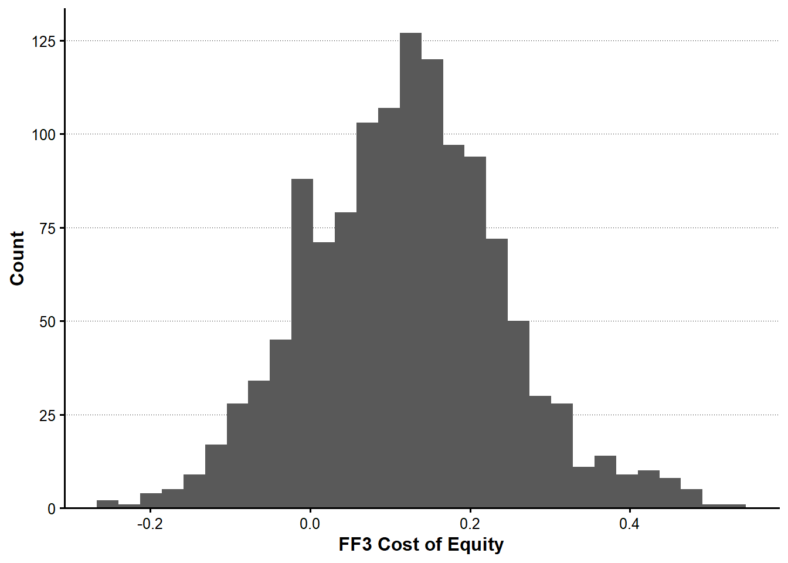
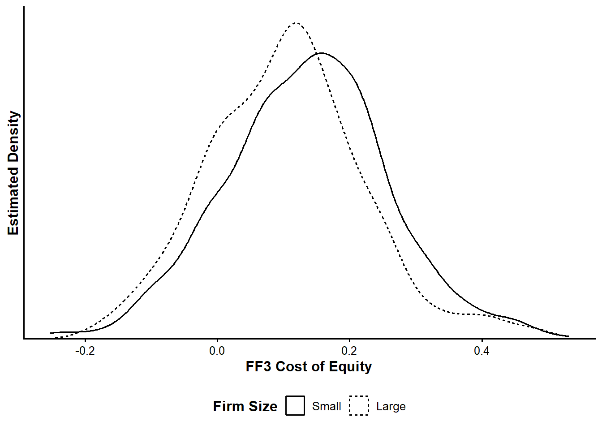
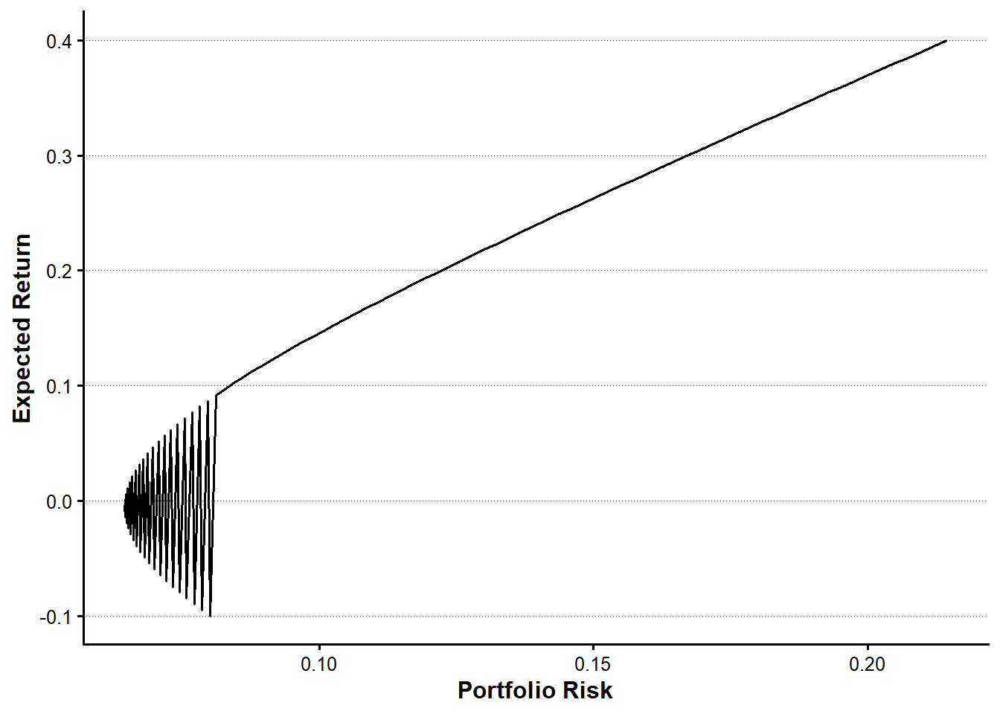

tbl_monthly_raw <-
read_derived_parquet_file_LFL(
file.path(
"returns",
"monthly_stock_returns.parquet"
)
)
tbl_annual_raw <-
read_derived_parquet_file_LFL(
file.path(
"fundamentals",
"annual_firm_characteristics.parquet"
)
)
tbl_factor <-
read_derived_parquet_file_LFL(
file.path(
"factors",
"fama_french_factors.parquet"
)
)第I-5章 資産価格モデルとポートフォリオ最適化
本章では、Fama–Frenchの3ファクター・モデルを用いて企業別の期待リターンを推定し、その結果を配当成長率の分析とポートフォリオ最適化へ接続する。
前章までに作成した月次株式データ、年次企業データ、ファクターデータを利用し、企業固有リスクと共通ファクターリスクから株式リターンの分散共分散行列を構築する。最後に、平均分散最適化を実行し、目標期待リターンの変化に応じた効率的フロンティアを確認する。
5.1 分析対象とデータの接続
5.1.1 共通関数と分析データ
本章では、プロジェクト共通のutilityを読み込み、前章までに作成された派生データを利用する。パッケージの導入方法そのものは扱わず、分析に必要な処理から開始する。
5.1.2 推定対象企業の選定
企業別の時系列回帰には一定数の観測値が必要である。本章では、2020年末まで上場が継続し、月次観測値が36か月以上存在する企業を推定対象とする。
tbl_monthly <- tbl_monthly_raw |>
group_by(firm_ID) |>
mutate(
is_public_2020 = max(month_ID, na.rm = TRUE) == 72,
n_observations = n()
) |>
ungroup() |>
filter(
is_public_2020,
n_observations >= 36
) |>
select(-n_observations)年次データについても、月次データに含まれる企業と年度の組合せに限定する。
tbl_annual <- tbl_monthly |>
distinct(year, firm_ID) |>
left_join(
tbl_annual_raw,
by = c("year", "firm_ID")
)5.1.3 月次株式リターンとファクターの結合
月次株式データとファクターデータを month_ID で結合する。無リスク金利 R_F が月次株式データにも含まれる場合は、重複を避けるため、ファクターデータ側の値を利用する。
tbl_monthly_factor <- tbl_monthly |>
select(-any_of("R_F")) |>
left_join(
tbl_factor,
by = "month_ID"
)5.2 FF3モデルによる期待リターンの推定
5.2.1 FF3モデル
企業 \(i\) の時点 \(t\) における超過リターンを、次の3ファクター・モデルで表す。
\[ R_{i,t} - R_{F,t} = \beta_{i,M} R_{M,t}^{e} + \beta_{i,SMB} SMB_t + \beta_{i,HML} HML_t + \varepsilon_{i,t} \]
ここで、\(R_{M,t}^{e}\) は市場超過リターン、\(SMB_t\) は企業規模ファクター、\(HML_t\) は簿価時価比率ファクターである。本章では、入力データに含まれる超過リターン Re を被説明変数とし、定数項を置かずに企業別回帰を推定する。
tbl_ff3_models <- tbl_monthly_factor |>
select(
firm_ID,
Re,
R_Me,
SMB,
HML
) |>
drop_na() |>
group_by(firm_ID) |>
nest(tbl_firm = -firm_ID) |>
mutate(
list_model = map(
tbl_firm,
\(tbl_data) {
lm(
Re ~ 0 + R_Me + SMB + HML,
data = tbl_data
)
}
),
tbl_coefficient = map(
list_model,
broom::tidy
)
) |>
ungroup()5.2.2 企業別ファクター・ローディング
企業別回帰から得られた係数を横持ち形式に変換し、市場、企業規模、簿価時価比率に対する感応度として整理する。
tbl_ff3_loadings <- tbl_ff3_models |>
select(
firm_ID,
tbl_coefficient
) |>
unnest(tbl_coefficient) |>
select(
firm_ID,
term,
estimate
) |>
pivot_wider(
names_from = term,
values_from = estimate
) |>
rename(
beta_market = R_Me,
beta_size = SMB,
beta_value = HML
)
show_table_head_LFL(tbl_ff3_loadings)
#> # A tibble: 6 × 4
#> firm_ID beta_market beta_size beta_value
#> <int> <dbl> <dbl> <dbl>
#> 1 1 1.6191 2.6384 0.48152
#> 2 2 1.2405 0.50565 -0.52252
#> 3 3 0.69623 1.1439 0.33640
#> 4 4 0.37560 0.50193 -0.43245
#> 5 5 0.58264 1.5325 1.1194
#> 6 7 0.38022 0.92052 -0.299615.2.3 ファクター・リスクプレミアム
月次ファクターリターンの標本平均を12倍し、年率換算したファクター・リスクプレミアムを求める。
vec_factor_names <- c("R_Me", "SMB", "HML")
tbl_factor_risk_premium <- tbl_factor |>
summarise(
across(
all_of(vec_factor_names),
\(vec_return) {
mean(vec_return, na.rm = TRUE) * 12
}
)
) |>
pivot_longer(
cols = everything(),
names_to = "factor",
values_to = "annual_risk_premium"
)
vec_factor_risk_premium <- tbl_factor_risk_premium |>
arrange(match(factor, vec_factor_names)) |>
pull(annual_risk_premium)
names(vec_factor_risk_premium) <- vec_factor_names
show_table_LFL(tbl_factor_risk_premium)
#> # A tibble: 3 × 2
#> factor annual_risk_premium
#> <chr> <dbl>
#> 1 R_Me 0.048258
#> 2 SMB 0.078586
#> 3 HML 0.0833955.2.4 株式資本コスト
FF3モデルに基づく企業 \(i\) の期待超過リターンは、ファクター・ローディングとファクター・リスクプレミアムの積和として求められる。
\[ E[R_i-R_F] = \beta_{i,M}E[R_M^e] + \beta_{i,SMB}E[SMB] + \beta_{i,HML}E[HML] \]
本章では、この期待超過リターンを企業の株式資本コストとして利用する。
tbl_cost_of_equity <- tbl_ff3_loadings |>
mutate(
cost_of_equity =
beta_market * vec_factor_risk_premium[["R_Me"]] +
beta_size * vec_factor_risk_premium[["SMB"]] +
beta_value * vec_factor_risk_premium[["HML"]]
)
show_table_head_LFL(tbl_cost_of_equity)
#> # A tibble: 6 × 5
#> firm_ID beta_market beta_size beta_value cost_of_equity
#> <int> <dbl> <dbl> <dbl> <dbl>
#> 1 1 1.6191 2.6384 0.48152 0.32563
#> 2 2 1.2405 0.50565 -0.52252 0.056027
#> 3 3 0.69623 1.1439 0.33640 0.15155
#> 4 4 0.37560 0.50193 -0.43245 0.021505
#> 5 5 0.58264 1.5325 1.1194 0.24190
#> 6 7 0.38022 0.92052 -0.29961 0.0657025.3 期待リターンと配当成長率
5.3.1 期待リターンの企業間分布
plot_cost_of_equity_distribution <- tbl_cost_of_equity |>
ggplot(
aes(x = cost_of_equity)
) +
geom_histogram(bins = 30) +
labs(
x = "FF3 Cost of Equity",
y = "Count"
) +
scale_y_continuous(
expand = expansion(mult = c(0, 0.05))
)
plot_cost_of_equity_distribution <- add_lagrange_theme_LFL(
plot_cost_of_equity_distribution
)
show_plot_LFL(plot_cost_of_equity_distribution)
5.3.2 企業規模と期待リターン
tbl_firm_characteristics_2020 <- tbl_annual |>
arrange(
firm_ID,
year
) |>
group_by(firm_ID) |>
mutate(
lagged_ME = lag(ME)
) |>
ungroup() |>
filter(year == 2020) |>
mutate(
size_group = ntile(lagged_ME, 2),
size_group = factor(
size_group,
levels = c(1, 2),
labels = c("Small", "Large")
)
) |>
inner_join(
tbl_cost_of_equity,
by = "firm_ID"
) |>
drop_na(
lagged_ME,
cost_of_equity,
size_group
)plot_cost_of_equity_by_size <- tbl_firm_characteristics_2020 |>
ggplot(
aes(
x = cost_of_equity,
linetype = size_group
)
) +
geom_density() +
labs(
x = "FF3 Cost of Equity",
y = "Estimated Density",
linetype = "Firm Size"
) +
scale_y_continuous(
expand = expansion(mult = c(0, 0.05)),
breaks = NULL
)
plot_cost_of_equity_by_size <- add_lagrange_theme_LFL(
plot_cost_of_equity_by_size
)
show_plot_LFL(plot_cost_of_equity_by_size)
5.3.3 配当利回り
tbl_dividend_yield_2020 <- tbl_monthly |>
filter(year == 2020) |>
group_by(firm_ID) |>
summarise(
annual_dividend = sum(
DPS * shares_outstanding,
na.rm = TRUE
),
latest_ME = ME[which.max(month_ID)],
.groups = "drop"
) |>
mutate(
dividend_yield = annual_dividend / latest_ME
) |>
filter(
is.finite(dividend_yield),
dividend_yield > 0
)
show_table_head_LFL(tbl_dividend_yield_2020)
#> # A tibble: 6 × 4
#> firm_ID annual_dividend latest_ME dividend_yield
#> <int> <dbl> <dbl> <dbl>
#> 1 1 325472000 9708946000 0.033523
#> 2 2 37536000 5194044000 0.0072267
#> 3 3 4660110000 214032195000 0.021773
#> 4 4 101352000 8652927000 0.011713
#> 5 5 745488000 235170402000 0.0031700
#> 6 7 64848000 15909376000 0.00407615.3.4 潜在配当成長率
株式資本コストを \(r_i\)、配当利回りを \(y_i\) とすると、本章で用いる潜在配当成長率 \(g_i\) は次式から逆算される。
\[ g_i = \frac{r_i-y_i}{1+y_i} \]
tbl_implied_dividend_growth <- tbl_dividend_yield_2020 |>
inner_join(
tbl_cost_of_equity |>
select(
firm_ID,
cost_of_equity
),
by = "firm_ID"
) |>
mutate(
implied_dividend_growth =
(cost_of_equity - dividend_yield) /
(1 + dividend_yield)
)
show_table_head_LFL(tbl_implied_dividend_growth)
#> # A tibble: 6 × 6
#> firm_ID annual_dividend latest_ME dividend_yield cost_of_equity
#> <int> <dbl> <dbl> <dbl> <dbl>
#> 1 1 325472000 9708946000 0.033523 0.32563
#> 2 2 37536000 5194044000 0.0072267 0.056027
#> 3 3 4660110000 214032195000 0.021773 0.15155
#> 4 4 101352000 8652927000 0.011713 0.021505
#> 5 5 745488000 235170402000 0.0031700 0.24190
#> 6 7 64848000 15909376000 0.0040761 0.065702
#> implied_dividend_growth
#> <dbl>
#> 1 0.28263
#> 2 0.048450
#> 3 0.12701
#> 4 0.0096791
#> 5 0.23797
#> 6 0.0613765.4 ファクターモデルによるリスク推定
5.4.1 ファクターの分散共分散
tbl_factor_covariance <- compute_covariance_table_LFL(
tbl_data = tbl_factor,
vec_variables = vec_factor_names,
annualization_factor = 12
)
matrix_factor_covariance <- convert_covariance_table_to_matrix_LFL(
tbl_factor_covariance
)
show_table_LFL(tbl_factor_covariance)
#> # A tibble: 9 × 3
#> variable_row variable_column covariance
#> <chr> <chr> <dbl>
#> 1 R_Me R_Me 0.020665
#> 2 R_Me SMB -0.0039063
#> 3 R_Me HML 0.0015310
#> 4 SMB R_Me -0.0039063
#> 5 SMB SMB 0.0062694
#> 6 SMB HML -0.0018855
#> 7 HML R_Me 0.0015310
#> 8 HML SMB -0.0018855
#> 9 HML HML 0.00391295.4.2 投資ユニバース
n_portfolio_firms <- 100L
tbl_investment_universe <- tbl_annual |>
filter(year == 2020) |>
inner_join(
tbl_cost_of_equity |>
select(
firm_ID,
cost_of_equity
),
by = "firm_ID"
) |>
slice_max(
order_by = ME,
n = n_portfolio_firms,
with_ties = FALSE
) |>
arrange(desc(ME)) |>
select(
firm_ID,
ME,
cost_of_equity
)
vec_investment_firm_ids <- tbl_investment_universe |>
pull(firm_ID)
n_portfolio_firms <- length(vec_investment_firm_ids)
show_table_head_LFL(tbl_investment_universe)
#> # A tibble: 6 × 3
#> firm_ID ME cost_of_equity
#> <int> <dbl> <dbl>
#> 1 790 2.7339e13 0.061424
#> 2 987 5.4441e12 -0.071023
#> 3 1237 5.2764e12 0.091188
#> 4 1057 5.1050e12 -0.058108
#> 5 988 4.9127e12 -0.10059
#> 6 1400 3.7669e12 0.209795.4.3 企業固有リスク
tbl_idiosyncratic_variance <- tbl_monthly_factor |>
filter(
firm_ID %in% vec_investment_firm_ids
) |>
inner_join(
tbl_ff3_loadings,
by = "firm_ID"
) |>
mutate(
fitted_return =
R_F +
beta_market * R_Me +
beta_size * SMB +
beta_value * HML,
residual_return = R - fitted_return
) |>
group_by(firm_ID) |>
summarise(
idiosyncratic_variance =
12 * var(
residual_return,
na.rm = TRUE
),
.groups = "drop"
) |>
right_join(
tbl_investment_universe |>
select(firm_ID),
by = "firm_ID"
) |>
arrange(
match(
firm_ID,
vec_investment_firm_ids
)
)
show_table_head_LFL(tbl_idiosyncratic_variance)
#> # A tibble: 6 × 2
#> firm_ID idiosyncratic_variance
#> <int> <dbl>
#> 1 790 0.055478
#> 2 987 0.036155
#> 3 1237 0.053695
#> 4 1057 0.045481
#> 5 988 0.12455
#> 6 1400 0.0948335.4.4 株式リターンの分散共分散
企業別ファクター・ローディングを並べた行列を \(\boldsymbol{B}\)、企業固有リスクの対角行列を \(\boldsymbol{\Sigma}_{\varepsilon}\) とすると、株式リターンの分散共分散行列は次式で構築できる。
\[ \boldsymbol{\Sigma} = \boldsymbol{B} \boldsymbol{\Sigma}_F \boldsymbol{B}^{\mathsf{T}} + \boldsymbol{\Sigma}_{\varepsilon} \]
tbl_portfolio_loadings <- tbl_investment_universe |>
select(firm_ID) |>
left_join(
tbl_ff3_loadings,
by = "firm_ID"
)
matrix_factor_loadings <- tbl_portfolio_loadings |>
select(
beta_market,
beta_size,
beta_value
) |>
as.matrix()
vec_idiosyncratic_variance <- tbl_idiosyncratic_variance |>
pull(idiosyncratic_variance)
matrix_idiosyncratic_covariance <- diag(
vec_idiosyncratic_variance
)
matrix_return_covariance <-
matrix_factor_loadings %*%
matrix_factor_covariance %*%
t(matrix_factor_loadings) +
matrix_idiosyncratic_covariance
rownames(matrix_return_covariance) <- vec_investment_firm_ids
colnames(matrix_return_covariance) <- vec_investment_firm_ids5.4.5 期待リターン
vec_expected_returns <- tbl_investment_universe |>
pull(cost_of_equity)
names(vec_expected_returns) <- vec_investment_firm_ids
tibble(
firm_ID = vec_investment_firm_ids,
expected_return = vec_expected_returns
) |>
show_table_head_LFL()
#> # A tibble: 6 × 2
#> firm_ID expected_return
#> <int> <dbl>
#> 1 790 0.061424
#> 2 987 -0.071023
#> 3 1237 0.091188
#> 4 1057 -0.058108
#> 5 988 -0.10059
#> 6 1400 0.209795.5 平均分散最適化
5.5.1 最適化問題
目標期待リターンを \(\mu_p^*\) とすると、ポートフォリオ・ウェイト \(\boldsymbol{w}\) は次の問題から求められる。
\[ \min_{\boldsymbol{w}} \frac{1}{2} \boldsymbol{w}^{\mathsf{T}} \boldsymbol{\Sigma} \boldsymbol{w} \]
\[ \boldsymbol{w}^{\mathsf{T}} \boldsymbol{\mu} = \mu_p^* \]
\[ \boldsymbol{w}^{\mathsf{T}} \boldsymbol{1} = 1 \]
本章の基本設定では、空売りを禁止する不等式制約は追加しない。
5.5.2 目標期待リターンの設定
target_return <- 0.10
list_mean_variance_portfolio <- compute_mean_variance_portfolio_LFL(
matrix_covariance = matrix_return_covariance,
vec_expected_returns = vec_expected_returns,
target_return = target_return
)5.5.3 最適ポートフォリオ
tbl_optimal_portfolio <- create_portfolio_weight_table_LFL(
list_optimization = list_mean_variance_portfolio,
vec_asset_ids = vec_investment_firm_ids,
target_return = target_return
) |>
arrange(
desc(abs(weight))
)
show_table_head_LFL(
tbl_optimal_portfolio,
n = 10
)
#> # A tibble: 10 × 3
#> asset_ID weight target_return
#> <int> <dbl> <dbl>
#> 1 208 -0.16960 0.1
#> 2 1473 0.075792 0.1
#> 3 727 0.075617 0.1
#> 4 1253 0.073272 0.1
#> 5 987 0.068849 0.1
#> 6 829 0.062825 0.1
#> 7 409 -0.059685 0.1
#> 8 33 0.057845 0.1
#> 9 765 0.057677 0.1
#> 10 709 0.057313 0.15.5.4 最適化結果の検算
tbl_portfolio_summary <- compute_portfolio_summary_LFL(
list_optimization = list_mean_variance_portfolio,
target_return = target_return
) |>
mutate(
realized_expected_return = sum(
list_mean_variance_portfolio$solution *
vec_expected_returns
),
return_constraint_error =
realized_expected_return -
target_return,
weight_constraint_error =
weight_sum -
1
)
show_table_LFL(tbl_portfolio_summary)
#> # A tibble: 1 × 8
#> target_return portfolio_return portfolio_variance portfolio_risk weight_sum
#> <dbl> <dbl> <dbl> <dbl> <dbl>
#> 1 0.1 0.1 0.0069899 0.083606 1
#> realized_expected_return return_constraint_error weight_constraint_error
#> <dbl> <dbl> <dbl>
#> 1 0.1 -2.7756e-17 05.6 効率的フロンティア
5.6.1 目標期待リターンの範囲
vec_target_returns <- seq(
from = -0.10,
to = 0.40,
length.out = 100
)5.6.2 複数ポートフォリオの推定
tbl_efficient_frontier <- compute_efficient_frontier_LFL(
matrix_covariance = matrix_return_covariance,
vec_expected_returns = vec_expected_returns,
vec_target_returns = vec_target_returns
)
show_table_head_LFL(
tbl_efficient_frontier |>
select(
target_return,
portfolio_risk
)
)
#> # A tibble: 6 × 2
#> target_return portfolio_risk
#> <dbl> <dbl>
#> 1 -0.1 0.079982
#> 2 -0.094949 0.078497
#> 3 -0.089899 0.077068
#> 4 -0.084848 0.075697
#> 5 -0.079798 0.074389
#> 6 -0.074747 0.0731455.6.3 効率的フロンティアの描画
plot_efficient_frontier <- tbl_efficient_frontier |>
ggplot(
aes(
x = portfolio_risk,
y = target_return
)
) +
geom_line() +
labs(
x = "Portfolio Risk",
y = "Expected Return"
)
plot_efficient_frontier <- add_lagrange_theme_LFL(
plot_efficient_frontier
)
show_plot_LFL(plot_efficient_frontier)
5.7 まとめ
本章では、Fama–Frenchの3ファクター・モデルを企業別に推定し、市場、企業規模、簿価時価比率に対するファクター・ローディングを求めた。ファクター・リスクプレミアムとの積和から株式資本コストを計算し、配当利回りと組み合わせることで潜在配当成長率を推定した。
さらに、共通ファクターの分散共分散行列と企業固有リスクから株式リターンの分散共分散行列を構築した。これを平均分散最適化へ接続し、単一の目標期待リターンに対応する最適ポートフォリオと、複数の目標期待リターンからなる効率的フロンティアを確認した。